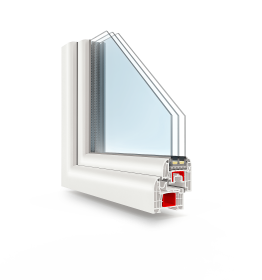

WHAT IS DOUBLE GLAZING?

Put in simple terms, a window with two layers of glazing. There are two types of double glazing, the earliest type is Secondary Glazing whereby a second glazed frame, which is usually made from aluminium, is fitted behind the main window.
ANY TYPE OF FRAME
There are four major types of window frames available on the market today: vinyl, aluminum, fiberglass, and wooden. It’s important to know which is best for your home and climate, so here’s what you need to know about each type of window frame.